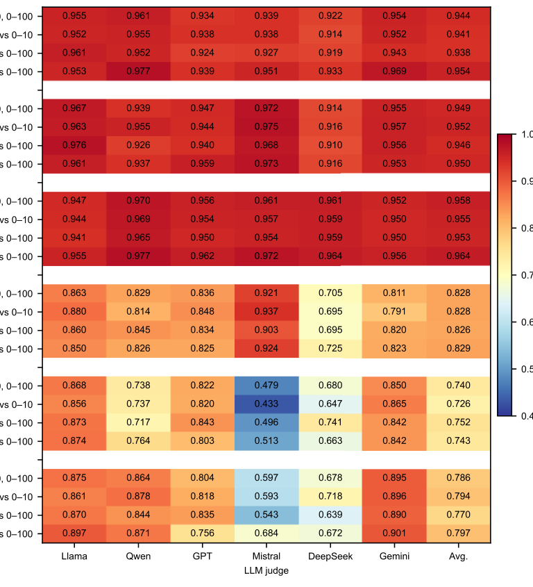
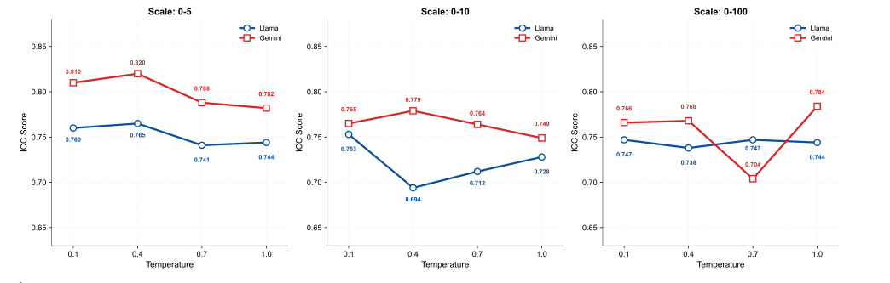

全文精读
评分范围如何影响大模型裁判：0–5范围的人机平均对齐最佳
Grading scale impact on LLM-as-a-judge: human-LLM alignment is highest on 0–5 grading scale
解读更新 2026-11-15 09:10 · 依据论文全文整理
全文精读已完成，文章版正在逐步升级。现有内容可继续阅读。
本文研究评分范围是否改变大模型裁判与人类的一致性，比较允许小数的0–5、0–10和0–100连续评分。六个基准的结果显示，0–5在人机汇总绝对一致性上最佳，但部分任务存在例外；较高的组内可靠性也可能掩盖任务差异。 阅读重点是完全交叉设计、ICC与归一化绝对误差的互补使用，而非直接照搬0–5。样本代表性和图间数值不一致限制了结论外推。
研究问题
论文追问：改变评分范围后，LLM是否仍表达相同判断，又在哪种范围下最接近人类？已有评价常依赖相关性，却可能忽略评分偏移。作者将评分范围从提示细节提升为待检验变量，并明确研究连续范围而非离散Likert选项数量。
方法与路线
六个LLM在三种范围下评价六基准共5,497条；人机比较采用150条、12名人类与六个模型的完全交叉设计。跨范围分数先缩放至[0,1]，再计算绝对一致性ICC；人机共识比较同时报告nMAE，以区分校准差异和平均误差。
创新与比较
主要贡献是系统检验评分范围对人机绝对一致性的影响，而不是提出新模型。研究结合跨范围自一致性、组内可靠性和人机对齐，并下钻至基准、模型及性别群体，揭示汇总可靠性可能遮蔽局部失配。其价值在评估设计，不在证明评分机制。
证据与发现
汇总人机ICC在0–5、0–10、0–100下分别为0.853、0.805、0.840，对应nMAE为0.111、0.122、0.115。作者的平均最优结论有数据支持，但STS-B在0–100、SummEval在0–10的ICC最高，不能推广为逐任务最优。
局限与边界
人类仅为研究生，每基准25条，连续评分结果不能直接外推至离散量表。 原文件缺项包括P2作者名“(author?)”占位，影响文献归属；P7图8与P5图4的SummEval数值不一致且缺少口径解释，影响该诊断实例，不能推定正确值。0–5优势机制仍未确立。 原文核对： 原页左栏可清楚核实“(author?)”后接参考文献5，属于作者名称未填的编辑占位，而非文字提取错误。缺项影响该处跨尺度Pearson相关研究的作者归属识别；参考文献编号仍在，不影响本批实验设计及结果的识读。未发现公式占位。； 图8上排标注SummEval，ICC=0.582、nMAE=0.100；但P5图4的SummEval三尺度ICC依次为0.517、0.570、0.470，nMAE为0.085、0.078、0.092。图8这两个数值反而与图4中TruthfulQA的0–5结果相同。已从两张原图核实差异；本批缺少说明其是否采用不同数据或计算口径的文字，不能判定哪处标签或数值需更正，也不能据此确认SummEval的具体诊断数值。
方向关联
解读：对智能运维中的故障解释、维修建议或风险报告评价，本研究提示不能只比较平均分或排名，还应检查专家与模型的绝对一致性及任务差异。结构设计与可靠性研究可借鉴其评价协议，但本文没有工程数据，不能据此声称提升安全性或设计性能。
后续研究建议
建议：在目标工程任务中先固定评价准则，再交叉比较评分范围，邀请不同经验的领域专家评分，同时报告ICC、nMAE和分任务结果。扩大样本并区分连续评分与离散选项；另需核实图8口径。以上是迁移研究建议，不是论文已经验证的应用成果。
阅读建议
建议作为评估协议设计的方法论文重点阅读，尤其关注分任务诊断和绝对一致性指标；不宜将其视为智能运维或结构设计的直接应用证据。
原图未改动。以下图注来自标注的来源，不据此补写摘要未报告的实验结论。
已取得的论文原图


原文图注与出处
Fig. 1 | LLM inter-scale agreement summary. For each benchmark and each LLM judge, we treat the model’s scores produced under different grading scales as repe- ated measurements of the same underlying judgment and report absolute-
Li, Weiyue et al.
原文图页 · CC BY-NC-ND 4.0

原文图注与出处
Fig. 7 | Temperature ablation for human-LLM agreement. Per-model pooled human alignment (ICC) under different decoding temperatures for each grading scale.
Li, Weiyue et al.
原文图页 · CC BY-NC-ND 4.0